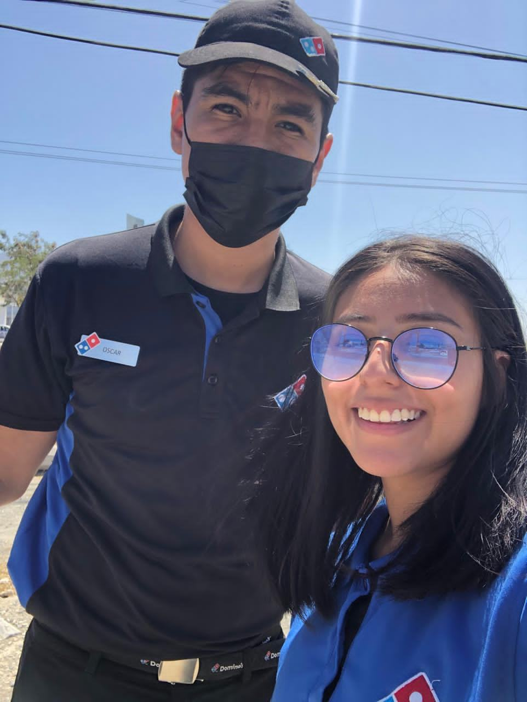
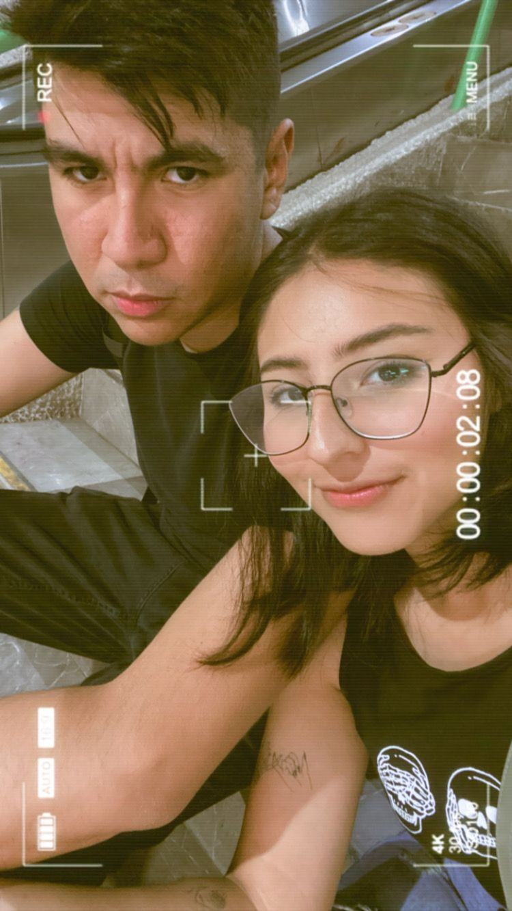
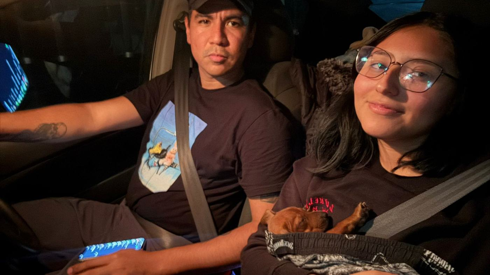
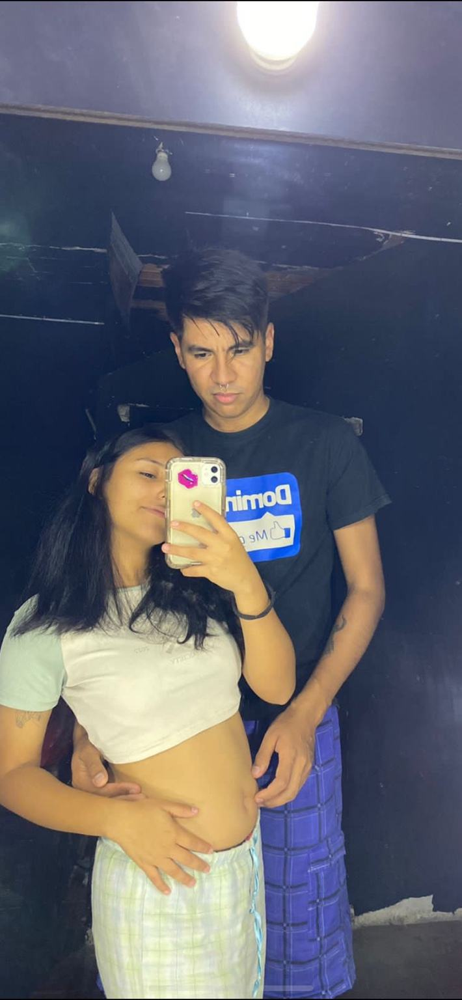
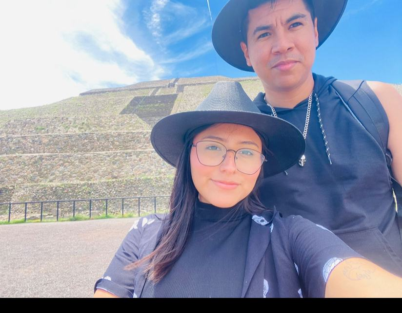
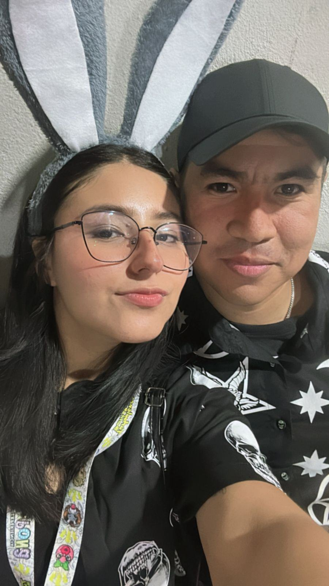
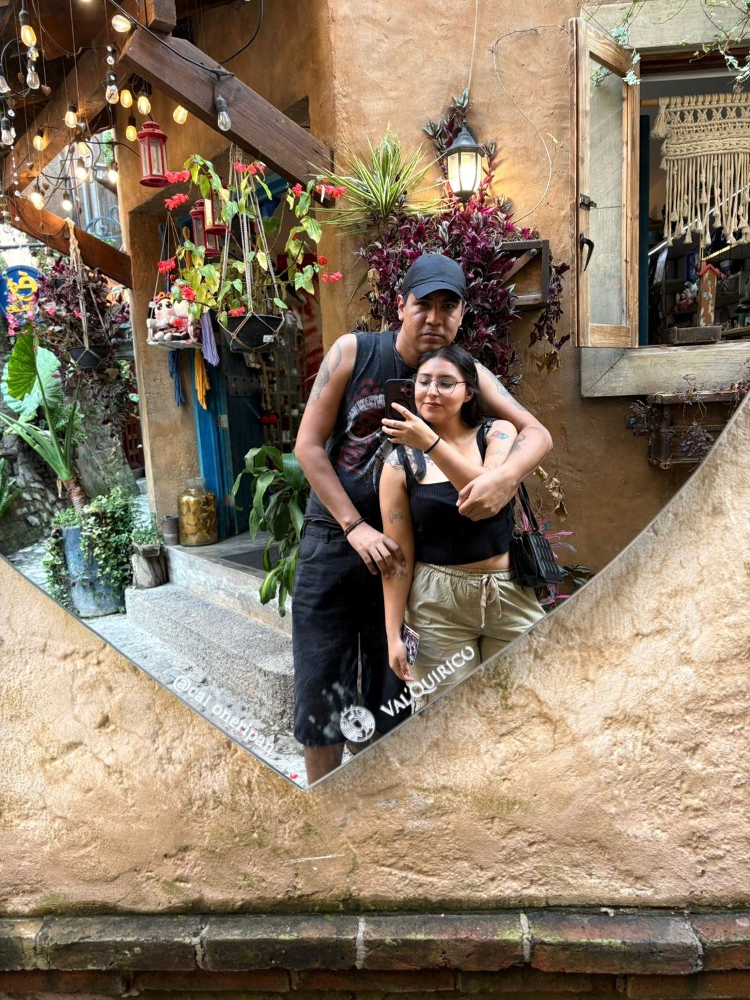

Donde empezó todo
Entre uniformes y casualidades
Quién iba a decir que entre días normales aparecería alguien capaz de convertirse en una parte tan grande de mi historia.
No quería regalarte una simple página. Quería construir un pequeño rincón oscuro, romántico y nuestro, lleno de recuerdos que ni el tiempo debería borrar.
Entrar a nuestra historia ☾Hay recuerdos que brillan y otros que viven mejor entre sombras. Viajes, selfies, días de trabajo, noches normales… todo se vuelve especial cuando forma parte de nosotros.

Quién iba a decir que entre días normales aparecería alguien capaz de convertirse en una parte tan grande de mi historia.

No hacen falta grandes fechas. A veces basta compartir el mismo espacio, una mirada y ese silencio que se siente como hogar.

Con nuestras etapas, errores, risas y formas de querernos. Todo eso también nos pertenece.
“Y después de todo… te sigo eligiendo a ti.”

Algún día volveremos a ver estas imágenes y recordaremos exactamente cómo se sentía estar ahí.

A veces el hogar no es una casa. Es una persona, una mirada y la sensación de no estar solo.

Más fotos, más viajes, más Halloween, más noches juntos y más recuerdos que todavía no existen.

Porque entre todo lo que cambia hay algo que quiero seguir cuidando: la oportunidad de crear recuerdos contigo.
Si llegaste hasta aquí, este pequeño código te trajo a algo mucho más grande: un pedacito de nuestra historia.
Michelle:
No sé cuántas fotografías harán falta para contar todo lo que hemos vivido. Algunas guardan momentos simples y otras capítulos enteros de nosotros.
Hemos pasado por cosas hermosas y otras difíciles. Pero cuando pienso en lo que quiero conservar, siempre termino regresando a estos pequeños momentos contigo.
Quiero seguir creando recuerdos a tu lado: más viajes, más noches, más risas, más Halloween, más días normales que después terminen siendo inolvidables.
Gracias por ser parte de esta historia. Después de todo lo vivido, hoy sigo queriendo decirte algo sencillo: te sigo eligiendo a ti.
Con amor,
Óscar ♥